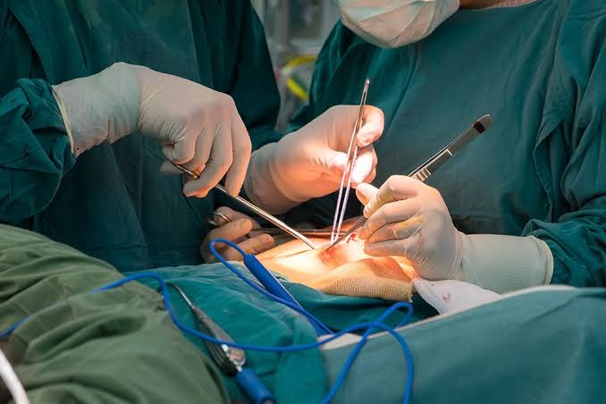
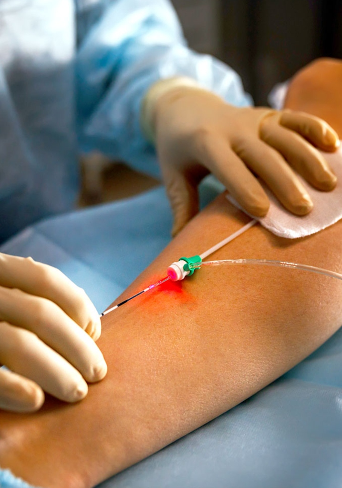
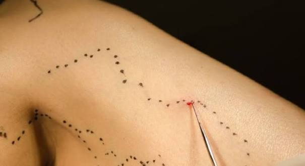
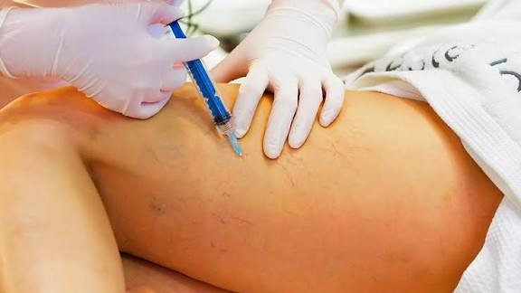
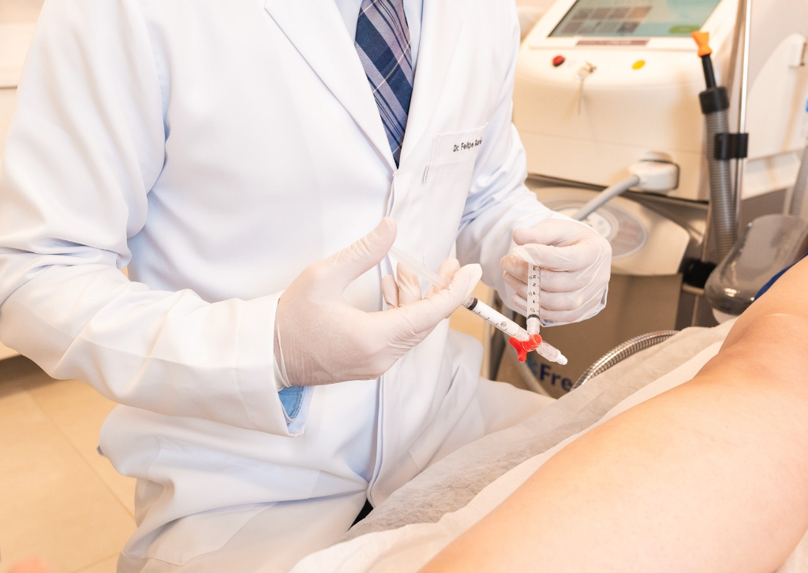
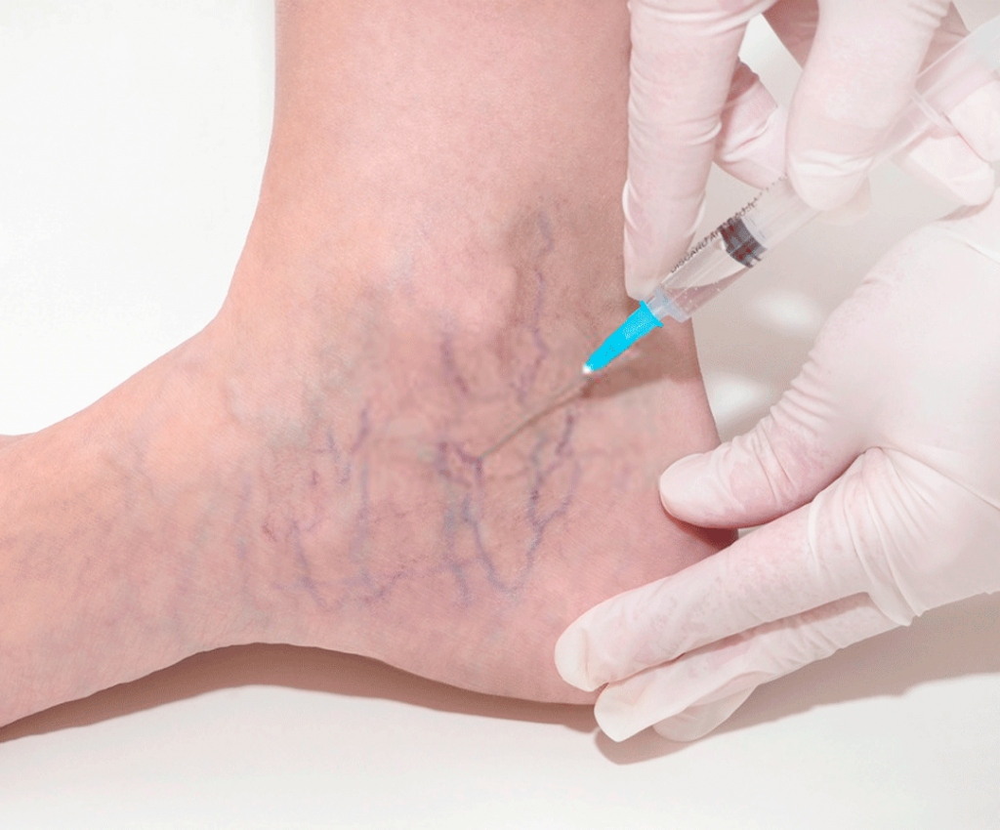
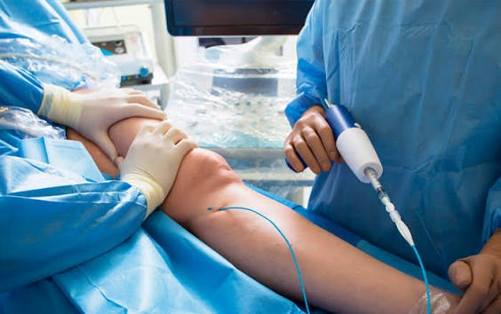
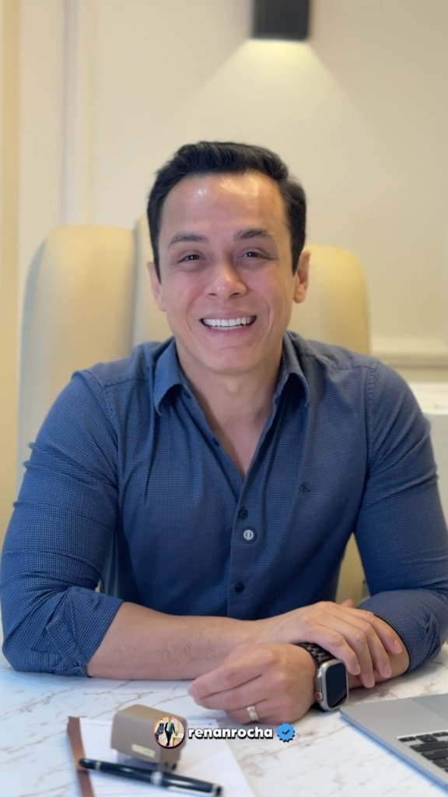
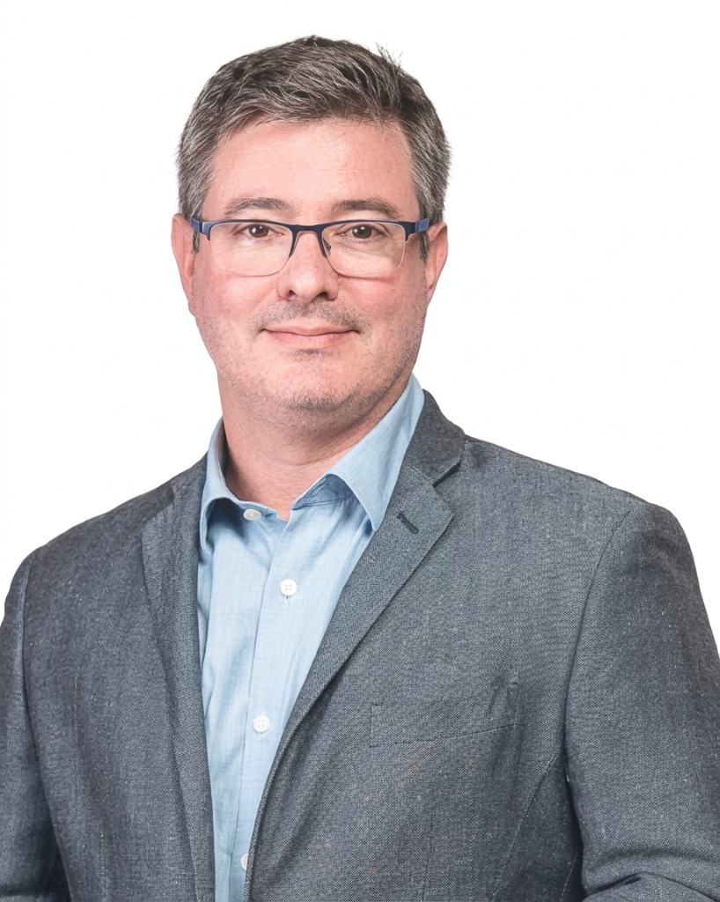

Venoso

Cirurgia de Varizes
Tratamento cirúrgico para a remoção de veias varicosas dilatadas, aliviando dores, inchaço e prevenindo tromboflebites.
Saber mais pelo WhatsApp →A Clínica CEVASC oferece atendimento médico de excelência, exames de ultrassonografia vascular com Eco-Color Doppler, tratamentos avançados para varizes e procedimentos cirúrgicos em ambiente hospitalar seguro.
O diagnóstico precoce e a avaliação personalizada evitam complicações mais graves, restabelecendo o conforto, a disposição e a beleza das suas pernas.
Sensação persistente de cansaço, peso ou queimação ao final do dia, comum em quadros de insuficiência venosa.
Edemas frequentes nas pernas e pés que pioram após longos períodos em pé ou sentado, exigindo investigação vascular.
Veias dilatadas, tortuosas ou vasinhos avermelhados (telangiectasias) que provocam incômodo estético e dores.
Desconforto noturno frequente, formigamento ou pontadas nas pernas que afetam o sono e o bem-estar rotineiro.
Localizada no centro de Altamira – Pará, a Clínica CEVASC alia tecnologia de ponta, precisão no diagnóstico ultrassonográfico e acolhimento humano para cada paciente.
Nossa missão: Promover a saúde por meio da prestação de serviços com rigor científico, conciliando inovação e respeito no cuidado com o paciente.
Área médica responsável pelo estudo clínico, prevenção, diagnóstico precoce e tratamento não cirúrgico das doenças dos vasos sanguíneos (artérias e veias) e linfáticos.
Especialidade médica cirúrgica dedicada ao tratamento invasivo e minimamente invasivo de doenças circulatórias, com total segurança em ambiente hospitalar credenciado.
Procedimentos venosos e arteriais realizados com técnicas modernas para promover saúde circulatória, rápida recuperação e excelentes resultados estéticos e funcionais.

Tratamento cirúrgico para a remoção de veias varicosas dilatadas, aliviando dores, inchaço e prevenindo tromboflebites.
Saber mais pelo WhatsApp →
Técnica minimamente invasiva guiada por ultrassom que oclui a veia safena por energia térmica, sem cortes extensos e com retorno rápido à rotina.
Saber mais pelo WhatsApp →
Aplicação combinada com resfriamento cutâneo em temperaturas baixas, proporcionando efeito analgésico e maior eficácia no fechamento dos vasinhos.
Saber mais pelo WhatsApp →
Procedimento ambulatorial consagrado para secagem dos vasinhos visíveis superficiais da pele, devolvendo a uniformidade visual das pernas.
Saber mais pelo WhatsApp →
Aplicação de agente esclerosante em forma de microespuma com auxílio direto de imagem ultrassonográfica, ideal para veias maiores sem necessidade de incisão.
Saber mais pelo WhatsApp →
Procedimento com microincisões milimétricas que retiram pequenos trajetos de varizes sem deixar cicatrizes aparentes, com excelente recuperação.
Saber mais pelo WhatsApp →
Procedimentos hospitalares de alta precisão para revascularização, desobstrução arterial e correção cirúrgica de aneurismas periféricos e de aorta.
Saber mais pelo WhatsApp →O Eco-Color Doppler é essencial para mapear detalhadamente o fluxo sanguíneo arterial e venoso, orientando o plano de tratamento com máxima assertividade.
Profissionais especializados em Angiologia e Cirurgia Vascular comprometidos com a saúde e a qualidade de vida da população de Altamira e região da Transamazônica e Xingu.

Médico titular da Clínica CEVASC com sólida formação e experiência em Angiologia e Cirurgia Vascular. Atua na avaliação clínica detalhada, realização de exames ultrassonográficos vasculares, procedimentos a laser, escleroterapias e cirurgias em ambiente hospitalar.
Agendar com Dr. Renan
Cirurgião Vascular de destacada atuação na região do Pará, dedicado ao cuidado preventivo e cirúrgico da circulação venosa e arterial. Preza pelo atendimento acolhedor, esclarecimento transparente de dúvidas e aplicação das condutas médicas mais seguras e modernas.
Agendar com Dr. MárioOferecemos uma estrutura pensada no conforto do paciente, com o rigor ético exigido pela prática médica contemporânea.
Procedimentos cirúrgicos realizados exclusivamente em hospitais credenciados com suporte de UTI e centro cirúrgico moderno.
Aparelhos de ultrassom com Eco-Color Doppler de última geração para mapeamento seguro e detalhado de cada vaso.
Escuta atenta para compreender sua história clínica, seus anseios e planejar o tratamento mais adequado à sua rotina.
Confira as principais dúvidas sobre atendimento, agendamentos, preparos para exames e procedimentos vasculares na CEVASC.
Atendemos nas áreas de Angiologia e Cirurgia Vascular, incluindo consultas clínicas preventivas, exames específicos de ultrassonografia vascular com Doppler, procedimentos a laser, escleroterapias para vasinhos e varizes, e intervenções cirúrgicas venosas e arteriais.
Os procedimentos cirúrgicos que demandam anestesia ou estrutura hospitalar são realizados em hospitais conveniados em Altamira, garantindo todo o respaldo e segurança necessários. As consultas e os procedimentos ambulatoriais ocorrem diretamente na nossa clínica.
O agendamento pode ser feito com praticidade pelo WhatsApp no número (48) 99157-5011 ou pelos telefones fixos (93) 3515-3649 e (93) 3515-4546. Nossa equipe orientará sobre datas disponíveis e eventuais preparos prévios.
Para exames de membros inferiores e superiores, geralmente não é necessário jejum. No caso de Doppler de Aorta ou Veia Cava, pode ser solicitado jejum e medicação preparatória para reduzir gases. Nossa equipe sempre fornece todas as orientações com antecedência.
Procedimentos modernos como a escleroterapia, o laser endovenoso e a microcirurgia de varizes costumam permitir retorno quase imediato às atividades habituais leves, sem a necessidade de repouso prolongado. A recuperação é personalizada de acordo com a técnica utilizada.
Funcionamos de segunda a sexta-feira, das 08h às 12h e das 14h às 18h. Aos sábados, nosso atendimento é das 08h às 12h.
Visite a nossa unidade em Altamira ou envie uma mensagem direta para nossa equipe pelo formulário abaixo.
Fácil acesso no centro da cidade de Altamira, com instalações confortáveis e acessibilidade.